Front Door Disassembly |
| 1. Disconnect Battery Negative Terminal |
| 2. Remove Front Door Inside Handle Bezel RH |
 |
Using a screwdriver with its tip wrapped in protective tape, disengage the 3 claws and remove the front door inside handle bezel RH.
| 3. Remove Door Assist Grip Cover RH |
 |
Using a screwdriver with its tip wrapped in protective tape, disengage the 4 claws and remove the door assist grip cover RH.
| 4. Remove Front Door Trim Board Sub-assembly RH |
 |
Remove the 3 screws.
 |
Using a clip remover, disengage the 9 clips of the front door trim board RH.
Disengage the 4 claws and disconnect the front door trim board RH from the front door glass weatherstrip inner RH.
 |
Disengage the 2 claws and remove the front door trim board RH from the front door inside handle RH.
Disconnect the connectors.
| 5. Remove Front Door Inside Handle Sub-assembly RH |
 |
Disconnect the front door lock remote control cable RH and front door inside locking cable RH, and remove the front door inside handle RH.
| 6. Remove Power Window Regulator Master Switch Assembly w/ Front Armrest Base Panel UPR RH |
 |
Disengage the 7 claws and remove the power window regulator master switch assembly w/ front armrest base panel UPR RH.
| 7. Remove Power Window Regulator Master Switch Assembly (Driver Side Door) |
 |
Remove the 3 screws and remove the power window regulator master switch assembly from the front armrest base panel UPR RH.
| 8. Remove Power Window Regulator Switch Assembly (Front Passenger Side Door) |
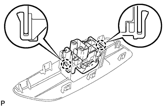 |
Using a screwdriver, disengage the 2 claws and remove the power window regulator switch assembly from the front armrest base panel UPR LH.
| 9. Remove Speaker Assembly FR NO.2 |
 |
Disengage the 3 claws and remove speaker assembly FR NO.2.
| 10. Remove Front Door Glass Weatherstrip Inner RH |
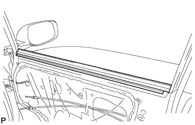 |
Remove the front door glass weatherstrip inner RH from the front door panel.
| 11. Remove Speaker Assembly FR NO.1 |
 |
Disconnect the connector.
Remove the 3 rivets and remove front speaker assembly NO.1 from the front door.
| 12. Remove Front Door Service Hole Cover RH |
 |
Disconnect the connector.
Remove the front door service hole cover RH.
| 13. Remove Outer Mirror Install Hole Cover RH |
| 14. Remove Outer Rear View Mirror Assembly w/ Cover |
 |
Disconnect the connector.
Remove the 3 bolts and remove the outer rear view mirror assembly w/ cover.
| 15. Remove Front Door Glass Sub-assembly RH |
Connect the negative battery terminal and the power window regulator master switch assembly, and move the front door glass RH to a position where its installation bolts are visible.
Disconnect the battery negative terminal and power window regulator master switch assembly.
 |
Remove the 2 bolts.
 |
Remove the front door glass RH in the order shown in the illustration.
| 16. Remove Front Door Window Regulator w/ Motor Assembly |
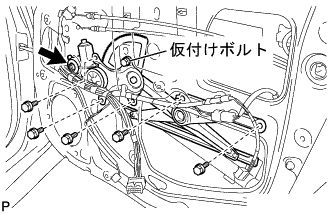 |
Disconnect the power window regulator motor assembly RH connector.
Loosen the temporary bolt.
Remove the 5 bolts and remove the front door window regulator w/ motor.
Remove the temporary bolt from the front door window regulator RH.
| 17. Remove Power Window Regulator Motor Assembly RH |
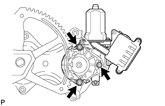 |
Using a torx socket wrench T25, remove the 3 torx screws and remove the power window regulator motor assembly RH from the front door window regulator RH.
| 18. Remove Front Door Stiffener Cushion NO.1 |
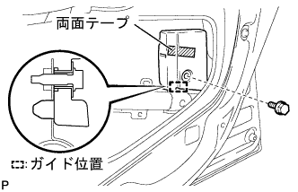 |
Remove the bolt.
Peel off the double-sided tape, disengage the guide and remove front door stiffener cushion No.1.
| 19. Remove Door Frame Garnish RH |
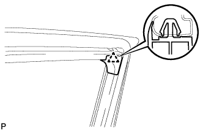 |
Using a screwdriver with its tip wrapped in protective tape, disengage the clips and remove the door frame garnish RH.
| 20. Remove Front Door Glass Run RH |
 |
Remove the front door glass run RH.
| 21. Remove Front Door Frame Sub-assembly RR LWR RH |
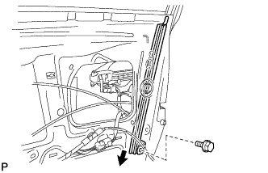 |
Remove the bolt.
Pull the front door frame RR LWR RH downward to remove it.
| 22. Remove Front Door Outside Handle Cover w/ Lock Cylinder Assembly |
 |
Remove the hole plug.
Using a torx socket wrench T30, remove the torx screw and remove the front door outside handle cover w/ lock cylinder assembly.
| 23. Remove Front Door Outside Handle Cover (Driver Side Door) |
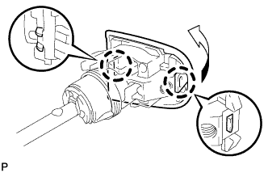 |
Using a screwdriver, disengage the 2 claws and remove the front door outside handle cover from the front door lock cylinder.
| 24. Remove Front Door Outside Handle Cover (Front Passenger Side Door) |
 |
Remove the hole plug.
Using a torx socket wrench T30, remove the torx screw and remove the front door outside handle cover.
| 25. Remove Front Door Outside Handle Assembly RH |
 |
Disconnect the front door outside handle assembly RH connector.
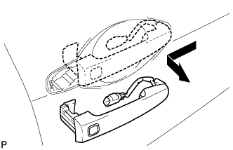 |
Pull the front door outside handle assembly RH toward the rear of the vehicle to disengage it from the front outside handle frame RH.
Pull the front door outside handle assembly RH toward the outside of the vehicle and remove it from the front door outside handle frame RH.
| 26. Remove Front Door Outside Handle Pad FR |
 |
Disengage the 2 claws and remove the front door outside handle pad FR.
| 27. Remove Front Door Outside Handle Pad RR |
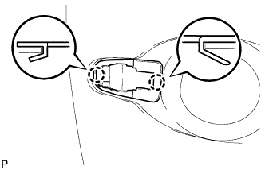 |
Disengage the 2 claws and remove the front door outside handle pad RR.
| 28. Remove Front Door Lock Assembly RH |
 |
Using a torx socket wrench T30, remove the 3 torx screws.
Slide the front door lock assembly RH downward, pull out the front door lock open rod RH, and remove the front door lock assembly RH.
Remove the door lock wire harness seal from the front door lock assembly RH.
| 29. Remove Front Door Lock Remote Control Cable Assembly RH |
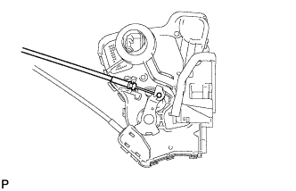 |
Remove the front door lock remote control cable RH from the front door lock assembly RH.
| 30. Remove Front Door Inside Locking Cable Assembly RH |
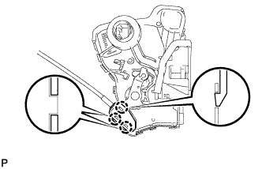 |
Using a screwdriver with its tip wrapped in protective tape, disengage the 3 claws.
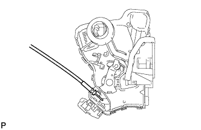 |
Remove the front door inside locking cable RH from the front door lock assembly RH.
| 31. Remove Front Door Outside Handle Frame Sub-assembly RH |
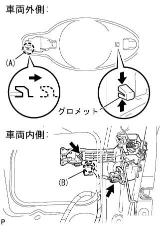 |
Using a torx socket wrench T30, remove the torx screw.
Pull it toward the front of the vehicle to disengage claw (A), and remove the front door outside handle frame RH.
Disengage claw (B).
Disconnect the connector.
| 32. Remove Front Door Lock Open Rod RH |
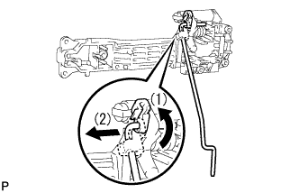 |
Following the procedure shown in the illustration, disengage the front door outside handle snap and remove the front door lock open rod RH.
| 33. Remove Door Electrical Key Oscillator |
 |
Remove the screw and remove the door electrical key oscillator.
| 34. Remove Front Door Check Assembly RH |
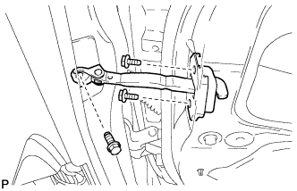 |
Remove the 3 bolts and remove the front door check RH.
| 35. Remove Front Door Weatherstrip RH |
 |
Using a clip remover, disengage the 16 clips and remove the front door weatherstrip RH.
| 36. Remove Front Door Belt Moulding Assembly RH |
 |
Apply protective tape to the body surface below the front door belt moulding assembly LH.
Using a screwdriver with its tip wrapped in protective tape, disengage the 6 claws from the inside of the door and remove the front door belt moulding assembly LH.
| 37. Remove Blackout Tape NO.1 RH |
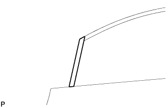 |
Using an infrared lamp, loosen blackout tape No.1 LH.
Raise the end of blackout tape No.1 LH with a fingernail and peel it off parallel to the application surface.
| 38. Remove Blackout Tape NO.2 RH |
Using an infrared lamp, loosen blackout tape No.2 LH.
 |
Raise the end of blackout tape No.2 LH with a fingernail and peel it off parallel to the application surface.